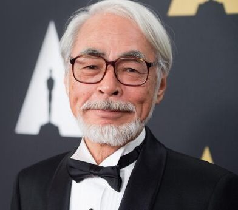

“Always believe in yourself. Do this and no matter where you are, you will have nothing to fear.”
― Hayao Miyazaki
Hayao Miyazaki is known as one of the most noted animators in the worldwide. He is a Japanese producer, screenwriter, film director, manga artist, author, and animator. A co-founder of Studio Ghibli, a film, and animation studio, attains as a greatest anime feature films maker and the greatest storyteller.
He has successfully created and got many prestigious awards for his works.His works are characterized by the recurrence of themes like feminism, pacifism, environmentalism,love, and family. His stories are also known for not putting a hero against an unsympathetic antagonist. Hayao Miyazaki does not like a modern technology and believes in modern culture. Besides, he also produced films which feature anti-war themes.
Award
Kaze tachinu
EDA Award Winner
2013
Hauru no ugoku shiro
Hollywood Film Award Winner
2005
Sen to Chihiro no kamikakushi
Oscar Winner
2003
Kujira tori
Ofuji Noburo Award Winner
2002
Mononoke-hime
Special Award Winner
1998
Kurenai no buta
Mainichi Film Concours Winner
1993
Majo no takkyûbin
Readers' Choice Award Winner
1990
Tonari no Totoro
Special Award Winner
1989